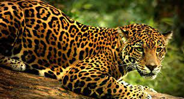

EL JAGUAR
El jaguar se encuentra en la categoría de “casi amenazada” de la Lista Roja de la Unión
Internacional para la Conservación de la Naturaleza (UICN).
En México está catalogado como una especie en peligro de extinción y su cacería está
vedada desde 1987.
La pérdida de su hábitat está considerada como la mayor amenaza que enfrenta pues se
trata de una especie que requiere de grandes extensiones de territorio para sobrevivir. El
desarrollo de infraestructura, la expansión de las actividades agrícolas y ganaderas, la
edificación de unidades habitacionales y la pérdida de vegetación son factores que han
degradado y fragmentado su hábitat.
 |